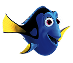
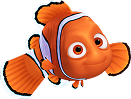
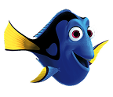
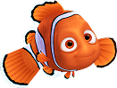

About Dory
Dory is a forgetful yet super-friendly blue tang who always sees the bright side. She makes friends in a flash and uses her cleverness to tackle any obstacle. With her big heart and boundless optimism, Dory shows us that friendship and perseverance can conquer just about anything.

Dory and her family
Dory's Characteristics
- Forgetful: Despite her short-term memory challenges, she remains endearing.
- Friendly: Dory makes friends effortlessly, showcasing her approachable nature.
- Optimistic: She always looks on the bright side, no matter the challenge.
- Clever: Dory uses her quick wit to overcome obstacles.
- Loyal: Her big heart and generosity make her incredibly dependable.
Dory's Friends
Dory's journey is enriched by a loving circle of friends and family...
- Jenny & Charlie: Dory's loving parents.
- Marlin: A caring clownfish.
- Nemo: A brave, curious clownfish.
- Destiny: A gentle whale shark whose calm presence offers guidance.
- Hank: A resourceful septopus.
 


